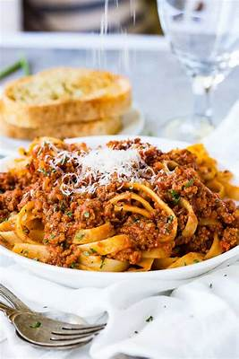
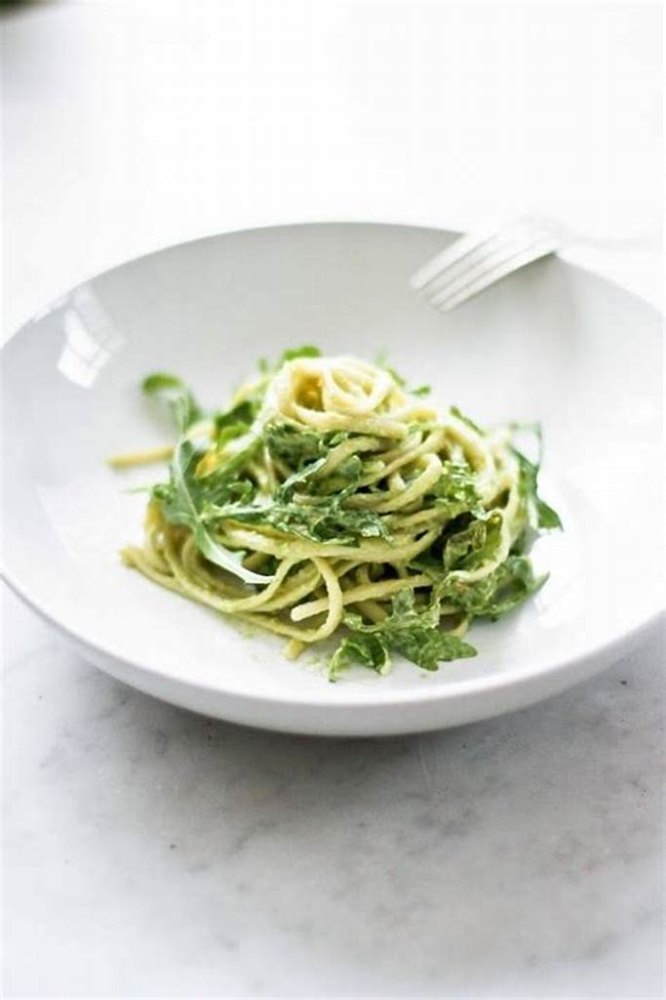

No discussion of Italian food is complete without pasta. From the silky strands of tagliatelle to the hearty rigatoni, pasta comes in countless shapes and sizes. Each region has its signature pasta dishes:


Italy is the birthplace of pizza, and nowhere is it more celebrated than in Naples. Traditional Neapolitan pizza features a thin, soft crust topped with San Marzano tomatoes, fresh mozzarella, basil, and a drizzle of olive oil. Each bite is a harmonious blend of flavors that captures the essence of Italian cooking.